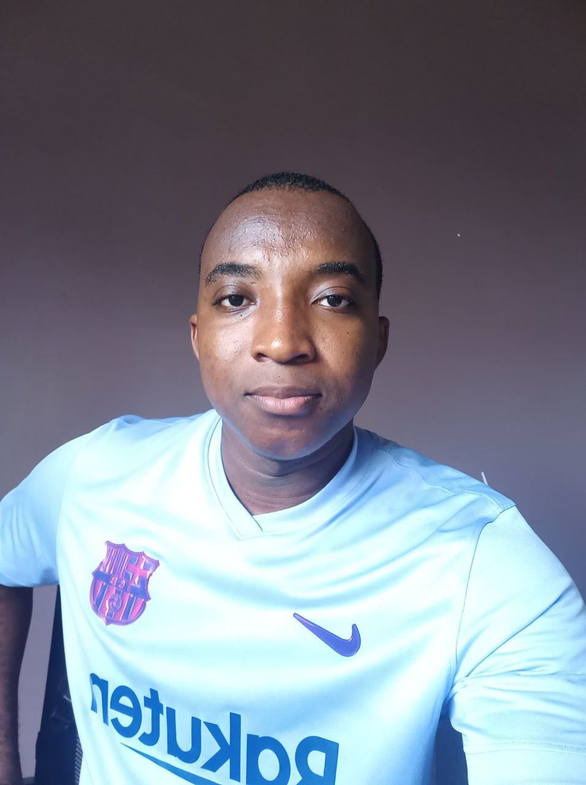

Francis Uba Ezieme | WDD 130
Hello! My name is Francis Uba Ezieme, I am from Abia State, Nigeria. I served as a missionary in Ghana; I began my missionary service, June 2013 and finished June 2015. Upon my return, i got an addmission to study Physics. I enjoy making Educational Research, Playing online Video Games, swimming and Soccer. I chose to enroll in the BYU Pathway program to further my self-improvement, enhance my education, and refine my skills. This decision aims to better position me for employment opportunities and achieve self-reliance. My ultimate goal is to work as a full stack developer anywhere in the world.